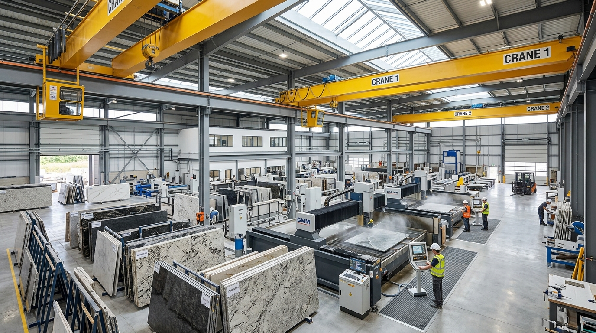
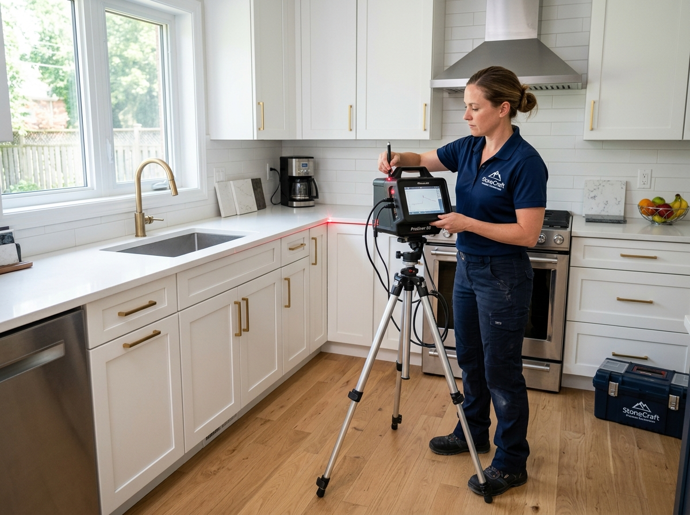
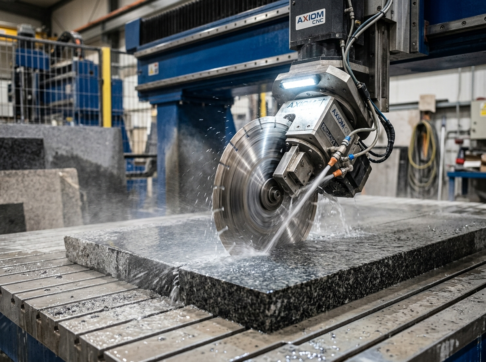
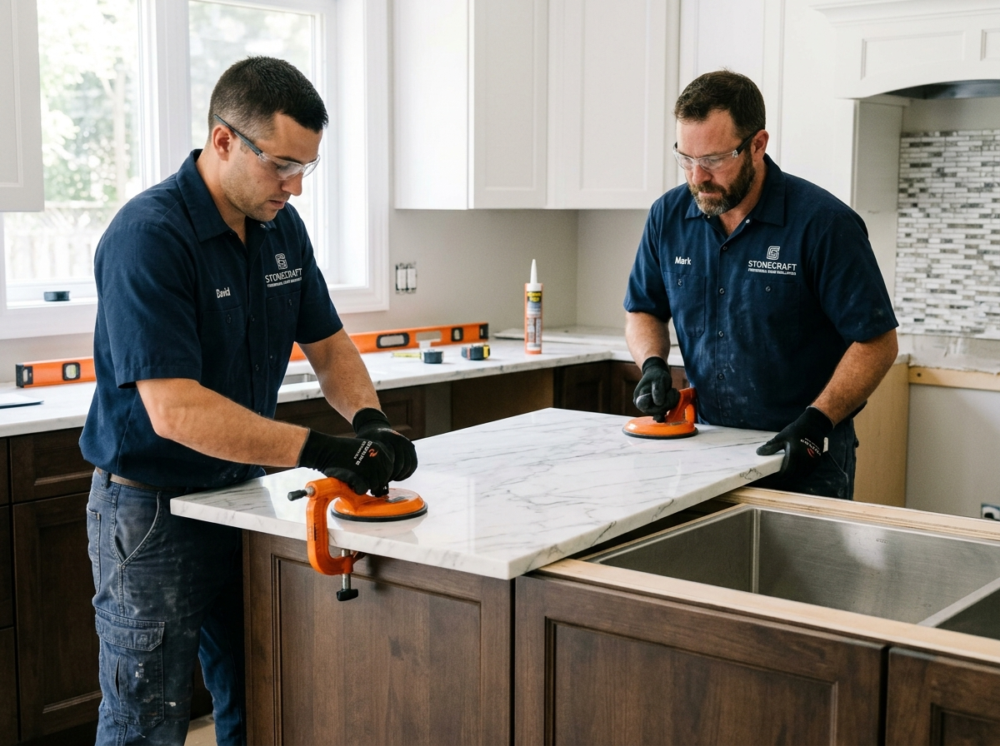

Three precise steps. One flawless result. From digital templating to final installation, we guide you through every stage of your stone project.
Every project follows our rigorous 3-stage standard to guarantee structural integrity and millimeter precision.
Every perfect countertop starts with a perfect template. Our technicians use laser-guided digital measuring tools to capture the exact dimensions, angles, and contours of your space — down to the millimeter.
Laser templating captures every wall irregularity.
We verify all fixtures before cutting begins.
Choose from eased, bullnose, bevel, ogee, and more.
You approve the veining pattern before we cut.
Have your cabinets fully installed before templating. This ensures the most accurate fit and avoids costly re-cuts.


This is where raw stone becomes a precision-engineered surface. Our CNC bridge saws and waterjet cutters translate your template into exact cuts, while our craftsmen hand-finish every edge.
Computer-guided saws cut with 0.1mm accuracy.
Hand-finished edges in your chosen profile.
Precision cutouts for undermount or drop-in fixtures.
Every piece is inspected before leaving the shop.
For bookmatched or vein-matched installations, we lay out all slabs side-by-side before cutting to ensure a seamless pattern.
The final step — and the one that brings it all together. Our installation team arrives on schedule, sets your stone with precision, and leaves your space clean and ready to enjoy.
We test-fit every piece before final placement.
Epoxy seams are color-matched to be nearly invisible.
Plumbing connections and appliance hookups.
We clean up and walk you through care instructions.
Plan to be home during installation. We'll need access to water and power, and you'll want to see the final result!

Most residential projects are completed within 2–3 weeks.
Got questions about templating, slab fabrication, or installation? Here are the answers to our most common inquiries.
Yes — please have your old countertops removed and cabinets fully installed before our template appointment. This ensures the most accurate measurements. If you need removal services, we can arrange that for an additional fee.
Standard fabrication takes 5–7 business days after template approval. Complex projects (waterfall edges, bookmatched slabs, intricate cutouts) may take 7–10 business days. We'll give you a specific timeline with your quote.
Seams are sometimes unavoidable, especially on large islands or L-shaped counters. However, our fabricators color-match epoxy to your stone, making seams nearly invisible. We plan seam placement to be as discreet as possible.
We handle the sink installation and can reconnect basic plumbing. For complex plumbing or gas connections (cooktops), we recommend having a licensed plumber on standby. We'll coordinate timing with you.
We stand behind our work. In the rare event of breakage during fabrication, we replace the slab at no cost to you. All our work is backed by a 10-year structural warranty.
Use mild soap and water for daily cleaning. For granite and marble, use a pH-neutral stone cleaner and reseal annually. Avoid acidic cleaners on marble. We provide a complete care guide and sample cleaner with every installation.
Have more questions about your upcoming project? Speak with our specialists
Book your free template appointment today. We'll guide you through every step.